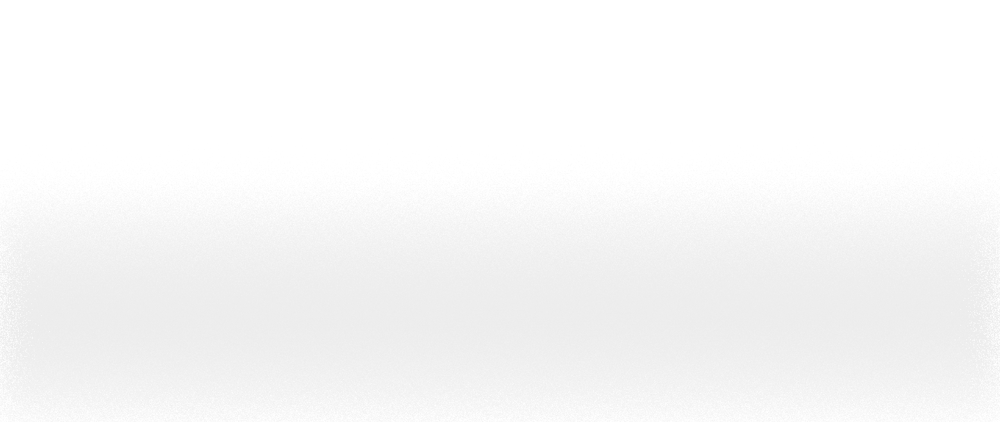

СБОЙ ПОТОКА ЛЮМИ-ВОЛН
ЭТОТ УЧАСТОК СОЗНАНИЯ НЕ ПРОШЁЛ ПРОСВЕТЛЕНИЕ.
ЛЮМИВОЛНЫ ЗДЕСЬ НЕ ПРОХОДЯТ. ПАМЯТЬ РАССЫПАЕТСЯ.
ВОЗМОЖНО, ВЫ ПЕРЕСЕКЛИ ГРАНИЦУ ЭПОХАМИ.
ВЕРНИТЕСЬ К НАЧАЛУ ФРАГМЕНТАЦИИ

ЛЮМИВОЛНЫ ЗДЕСЬ НЕ ПРОХОДЯТ. ПАМЯТЬ РАССЫПАЕТСЯ.
ВОЗМОЖНО, ВЫ ПЕРЕСЕКЛИ ГРАНИЦУ ЭПОХАМИ.
ВЕРНИТЕСЬ К НАЧАЛУ ФРАГМЕНТАЦИИ